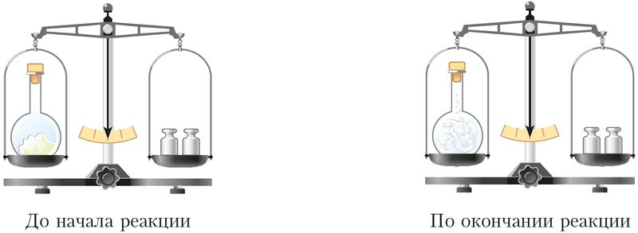

Закон сохранения массы веществ в химических реакциях
Закон сохранения массы веществ позволяет вычислять массы веществ, вступающих в реакцию или образующихся в результате её протекания.
Напомним, что процесс превращения одних веществ в другие без изменения общего числа и природы атомов, из которых эти вещества состоят, называют химической реакцией. Вступающие в химическую реакцию вещества — это реагенты, а образующиеся в результате химической реакции вещества — это продукты.
Протекание химических реакций подчиняется закону сохранения массы веществ: масса веществ, вступивших в химическую реакцию, равна массе образовавшихся веществ.
Действие закона можно показать на следующем примере. Если закрытую колбу с небольшим количеством фосфора взвесить, а затем нагреть, то фосфор загорается ярким пламенем, а колба наполняется белым дымом. Повторное взвешивание показывает, что общая масса колбы с содержимым не изменилась.
